Le graphe des fichiers de Drive
Ce que l'équipe 42 a ajouté à La Suite Drive, comment ça marche, et pourquoi chaque choix a été fait plutôt qu'un autre. Cette page a été écrite en relisant le code — pas la documentation du dépôt, qui décrit un état du projet qui n'existe plus.
1. En bref
Drive range des fichiers dans des dossiers. Le graphe les range par ce qu'ils disent : chaque fichier déposé est lu, découpé en passages, transformé en vecteurs, et relié à tous les autres fichiers du drive. La page dessine cette toile, la resserre autour de ce qui se ressemble, et laisse l'utilisateur écrire ses propres sujets.
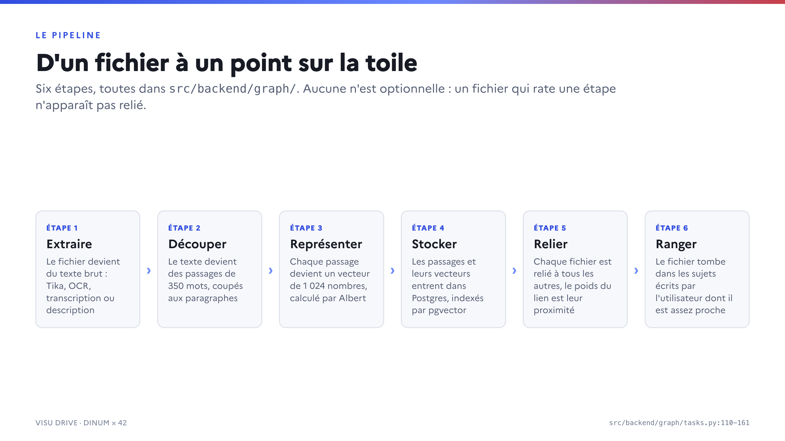
src/backend/graph/.Les trois choses à savoir avant de toucher au code
- Le README de l'app est périmé. Sur quinze affirmations vérifiables, quatorze sont fausses. Il renvoie vers une branche morte, décrit des seuils supprimés et un algorithme effacé. Voir Ne crois pas le README.
- Le serveur ne filtre plus rien, la page si. Le backend stocke un lien entre toutes les paires de fichiers indexés ; c'est le frontend qui décide lesquels méritent un trait. Chercher les seuils dans Python est une perte de temps. Voir Les seuils.
- Un push sur
mainpart directement en production, sans qu'aucun test ne tourne. Les 69 tests de l'app existent, il faut les lancer à la main. Voir Infrastructure.
2. Le projet
Ce qu'on a ajouté
Le dépôt Bouly/drive est un fork de suitenumerique/drive, aligné sur la
v0.22.0 + 11 commits, sans aucun retard sur l'amont. Tout le produit — explorateur,
partage, corbeille, authentification, édition en ligne, stockage S3 — vient de la DINUM. L'équipe a
ajouté une seule chose fonctionnelle, mais elle traverse toute la pile.
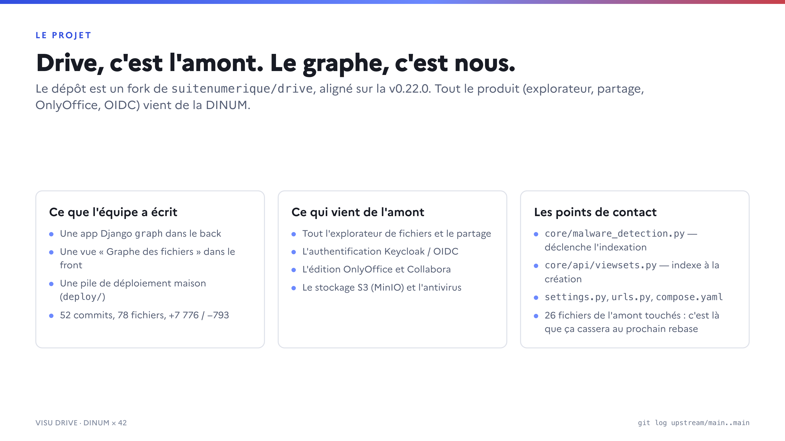
Cinquante-deux commits, 78 fichiers, +7 776 / −793 lignes. Le périmètre :
- une app Django
graph— modèles, sept services, API, tâches, signaux, admin ; - une vue « Graphe des fichiers » dans le frontend Next.js, rendue dans un canvas 2D ;
- une pile de déploiement maison sous
deploy/, plus un unique workflow GitHub.
L'app graph n'est pas isolée. Elle modifie 26 fichiers venus de l'amont, dont
core/malware_detection.py (qui déclenche l'indexation), core/api/viewsets.py,
settings.py, urls.py, compose.yaml, le Dockerfile
et le Makefile. C'est là que le prochain rebase sur l'amont fera mal.
Les pièces qui tournent
Presque rien n'est écrit par nous : ce sont des briques assemblées. Ce qu'on a écrit, c'est la colle entre elles.
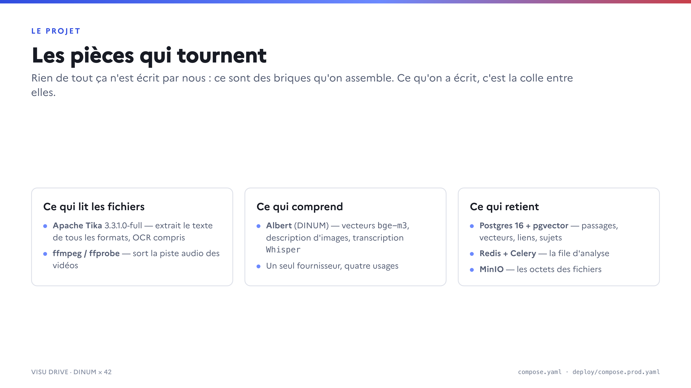
| Brique | Version | Ce qu'elle fait pour le graphe |
|---|---|---|
| Apache Tika | 3.3.1.0-full | Extrait le texte de tous les formats bureautiques et fait l'OCR (la variante full embarque tesseract). |
| ffmpeg / ffprobe | image backend | Vérifie qu'une vidéo a du son, puis en sort la piste audio découpée en segments. |
| Albert (DINUM) | API publique | Vecteurs bge-m3, description d'images, transcription Whisper large v3. |
| Postgres + pgvector | 0.8.6-pg16-trixie | Stocke passages, vecteurs, liens et sujets ; index HNSW cosinus. |
| Redis + Celery | — | La file d'analyse. Un seul worker, avec beat embarqué. |
| MinIO | — | Les octets des fichiers. Le graphe y lit par blocs de 8 Mio. |
Ne crois pas le README
src/backend/graph/README.md est la seule documentation du graphe dans le dépôt, et elle
décrit l'état du projet d'il y a une vingtaine de commits.
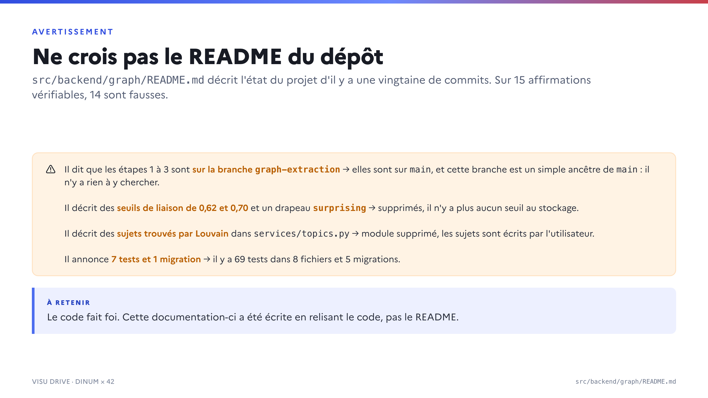
| Le README dit | Le code fait |
|---|---|
Les étapes 1 à 3 sont sur la branche graph-extraction, main ne garde que le stockage. | Tout est sur main. graph-extraction est un simple ancêtre de main : il n'y a rien à y chercher. |
| Quatre voisins maximum, seuils 0,62 et 0,70, plancher 0,50. | Aucun seuil, aucun plafond : chaque fichier indexé pointe vers tous les autres. |
Un lien porte un drapeau surprising (« rapprochement inattendu »). | Champ supprimé par la migration 0004. L'exemple du README le passe encore à replace_links, où il est ignoré en silence. |
Les sujets sont trouvés par détection de communautés (Louvain) dans services/topics.py, nommés par Albert. | Module supprimé. Les sujets sont écrits par l'utilisateur ; le regroupement automatique a été réécrit en TypeScript dans la page. |
| 7 tests, 1 migration. | 69 tests dans 8 fichiers, 5 migrations. |
storage.nearest_items(k=6, min_similarity=0.55) est le chemin de production. | Cette fonction n'est plus appelée que par les tests ; la production passe par item_similarities, sans seuil. |
Des fichiers .pyc orphelins traînent dans graph/services/__pycache__/
(topics, embeddings) et dans management/commands/__pycache__/
(graph_topics). Ils donnent l'impression que des modules supprimés existent encore.
3. Le pipeline
Les six étapes
- Extraire — le fichier devient du texte brut. Tika pour les documents, OCR pour les images, transcription pour les vidéos, description par un modèle de vision pour les photos muettes. À défaut, le nom du fichier.
- Découper — le texte est normalisé puis coupé par paragraphes en passages de 350 mots au plus. Un paragraphe plus long est fenêtré avec 50 mots de recouvrement. Deux passages issus de paragraphes différents ne partagent jamais un mot.
- Représenter — chaque passage devient un vecteur de 1 024 nombres, calculé
par Albert par lots de 32. Un passage déjà vu (même
sha256) ne coûte aucun appel. - Stocker — passages et vecteurs entrent dans
drive_graph_chunk, indexés par HNSW en distance cosinus. - Relier — chaque fichier indexé reçoit un lien vers tous les autres, dont le poids est la similarité cosinus. Les trois plus proches portent en plus un extrait de passage, en guise de preuve.
- Ranger — le fichier tombe dans chaque sujet utilisateur dont il est à 0,52 ou plus.
Comment un fichier devient du texte
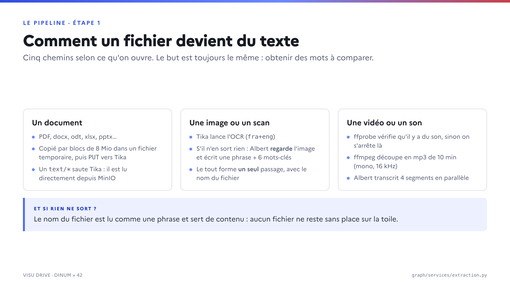
Un document
Un fichier text/* est lu directement depuis MinIO, au plus
GRAPH_MAX_TEXT_CHARS × 4 octets — un caractère UTF-8 tient en quatre octets au maximum.
Tout le reste est d'abord recopié par blocs de 8 Mio dans un fichier temporaire, puis envoyé en
PUT au serveur Tika. La copie sur disque n'est pas un caprice : une vidéo peut peser
plusieurs gigaoctets, et ffmpeg a besoin d'un chemin, pas d'un flux.
Une image ou un scan
L'OCR est délégué à Tika par un simple en-tête, X-Tika-OCRLanguage: fra+eng. Si rien
n'en sort, Albert regarde l'image et écrit une phrase plus six mots-clés, à
temperature = 0 pour que la même image revienne toujours avec les mêmes mots.
Le nom du fichier, la phrase et les mots-clés forment un seul passage.
Séparés, la phrase de description et les mots-clés donnaient à toutes les images un passage commun, fait de la tournure partagée par toutes les descriptions. Les photos se rapprochaient alors par la tournure : sur le drive de test, une photo d'abeilles ressortait plus proche d'une photo de vélo (0,59) que d'un PDF sur les abeilles (0,55). Fusionnés, ce sont les mots-clés qui l'emportent.
Une vidéo ou un son
ffprobe vérifie d'abord qu'il existe un flux audio : une vidéo muette ne coûte
alors aucun appel à Albert. Sinon ffmpeg découpe la piste en segments mp3 de dix minutes
(mono, 16 kHz, 32 kbit/s — environ 2,4 Mo par segment), transcrits quatre par quatre en
parallèle. Tika tourne en même temps, mais seulement pour les métadonnées : sur une vidéo, il ne
trouve qu'un titre. Un échec de Tika est avalé, un échec de transcription est fatal — sans la parole,
il n'y a rien à indexer.
Le déclenchement
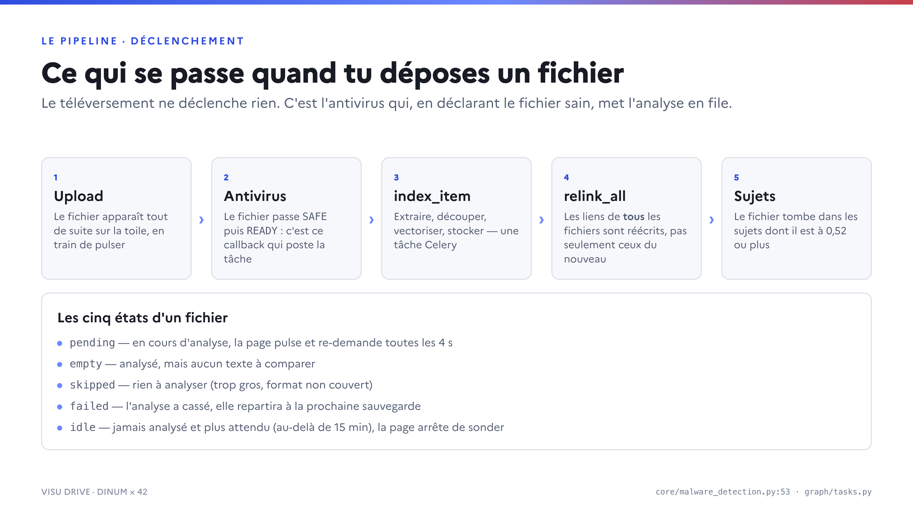
Le téléversement ne déclenche rien. C'est le callback de l'antivirus qui, en déclarant le
fichier SAFE puis READY, poste la tâche index_item
(core/malware_detection.py:53). C'est le seul endroit où les octets sont déclarés sûrs, et
is_extractable refuse de toute façon tout fichier qui n'est pas READY.
La tâche fait ensuite, dans l'ordre : extraire, décrire l'image s'il n'y a pas de texte,
découper, demander à Albert les vecteurs manquants, stocker les passages, réécrire les liens
de tous les fichiers indexés (relink_all), puis ranger le fichier dans les
sujets.
GRAPH_INDEX_ON_UPLOAD=False ne coupe que la voie de l'upload. Renommer un fichier et
le restaurer de la corbeille appellent index_item.delay() sans condition : en test,
ces deux chemins appellent vraiment Tika et Albert.
Côté corbeille, un unique receveur post_save sur Item réagit aux
sauvegardes qui portent à la fois deleted_at et ancestors_deleted_at —
la signature exacte de soft_delete et de restore. Mettre un dossier à la
corbeille marque ses descendants par un queryset.update(), qui n'émet aucun signal :
la tâche parcourt donc explicitement les descendants, sans quoi les fichiers d'un dossier jeté
resteraient cibles de liens.
Les états d'un fichier
| Statut | Ce que ça veut dire | Ce que fait la page |
|---|---|---|
pending | En cours d'analyse, ou en attente d'un worker. | Le point pulse, la page re-demande le graphe toutes les 4 s. |
empty | Analysé, mais sans texte à comparer. | Affiché, sans lien. |
skipped | Rien à analyser : trop gros, format hors périmètre. | Affiché, sans lien. |
failed | L'analyse a cassé. Elle repartira à la prochaine sauvegarde. | Affiché, sans lien. |
idle | Jamais analysé et plus attendu — au-delà de 15 minutes. | La page arrête de sonder. |
PENDING_GRACE ne s'applique qu'aux fichiers sans ligne d'indexation. Un
worker tué juste après avoir écrit l'état PENDING laisse le fichier pulser et la page
sonder indéfiniment.
4. Les choix et leurs raisons
Cette section est la raison d'être de cette page. L'historique du projet est une succession de décisions prises puis défaites en quelques heures ; ce qui suit dit ce qui a été retenu, ce qui a été essayé et jeté, et pourquoi.
Pourquoi les vecteurs vivent dans Postgres
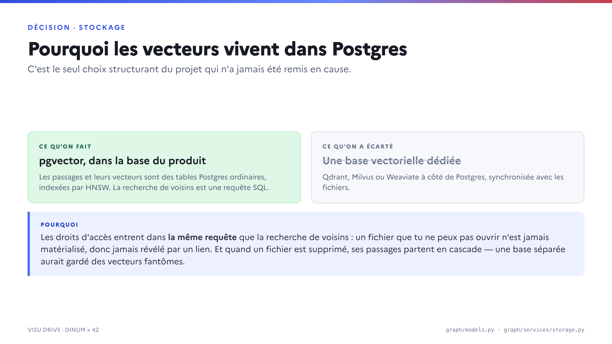
m=16, ef_construction=64, opclass vector_cosine_ops).Les droits d'accès entrent dans la même requête SQL que la recherche de voisins :
Item.objects.readable_per_se(user) est passé en argument à nearest_items. Un
fichier que tu ne peux pas ouvrir n'est jamais matérialisé, donc jamais révélé par un lien. Et quand un
fichier part, ses passages partent en cascade ; une base séparée aurait gardé des vecteurs fantômes.
Les vecteurs sont normalisés (norme 1), ce qui réduit la distance cosinus à un simple produit scalaire. C'est le seul choix structurant du projet qui n'a jamais été remis en cause.
Pourquoi Albert plutôt qu'un modèle chez nous
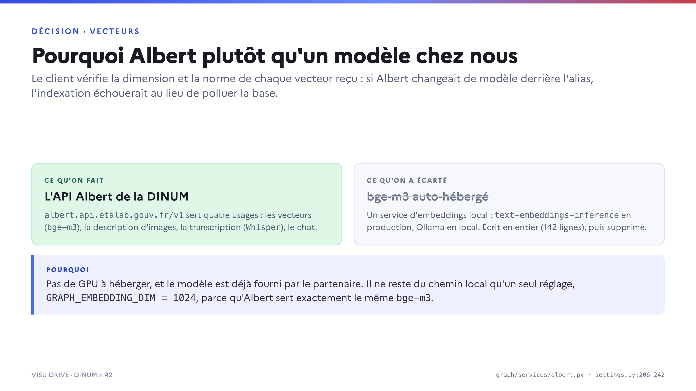
albert.api.etalab.gouv.fr/v1, quatre usages : vecteurs (openweight-embeddings, alias de BAAI/bge-m3), vision, transcription, chat.text-embeddings-inference en production, Ollama en local, piloté par GRAPH_EMBEDDING_BACKEND. Écrit en entier (142 lignes), livré, puis supprimé.Pas de GPU à héberger, et le modèle est déjà fourni par le partenaire. Du chemin local il ne reste
qu'un réglage, GRAPH_EMBEDDING_DIM = 1024, parce qu'Albert sert exactement le même
bge-m3.
Le client vérifie chaque vecteur reçu : la dimension doit valoir GRAPH_EMBEDDING_DIM
et la norme doit valoir 1 à 10−3 près. Un écart lève une AlbertError au lieu
d'être corrigé en silence — un vecteur non unitaire signale un autre modèle derrière l'alias, pas un
arrondi, et le normaliser remplirait la base de vecteurs d'un autre espace.
Chaque passage est identifié par le sha256 de son texte normalisé. Une ré-indexation,
une copie de fichier ou un passage répété ne coûtent aucun appel à Albert : le vecteur déjà stocké
est réutilisé.
Le seuil qui a été retiré
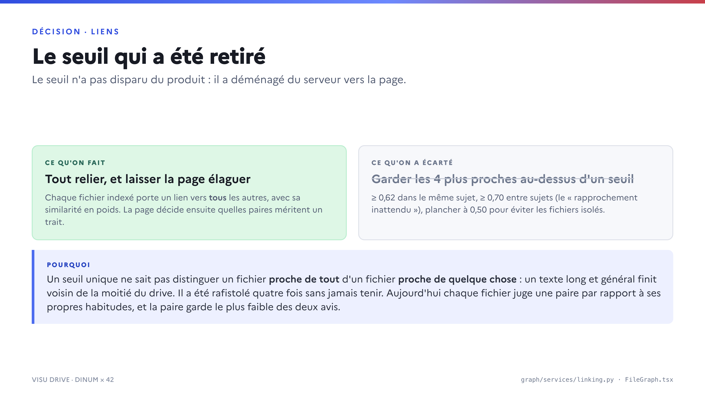
Un seuil unique ne distingue pas un fichier proche de tout d'un fichier proche de quelque chose : un texte long et général finit voisin de la moitié du drive. Le seuil a été rafistolé quatre fois sans jamais tenir. Aujourd'hui chaque fichier juge une paire par rapport à ses propres habitudes (un z-score calculé sur ses propres poids) et la paire garde le plus faible des deux avis. Sur un drive de 101 fichiers, cela fait tomber les liens inter-groupes parasites de 92 à 2 sur 352.
Chercher un seuil dans le Python est une perte de temps : l'élagage est dans
FileGraph.tsx. LINK_MIN_CLOSENESS = 0.35 décide quelles paires sont
dessinées ; MUTUAL_Z_LOW/HIGH = 0.6/2.2 bornent le z-score mutuel. Une paire
en dessous du seuil n'est pas supprimée pour autant : elle reste dans la simulation comme un ressort
« spacer » qui ne tire jamais et ne fait qu'écarter. Et chaque fichier garde toujours son plus proche
voisin, seuil ou pas, pour qu'un sujet porté par deux fichiers ne parte pas à la dérive.
Les sujets : inventés, supprimés, puis rendus à l'utilisateur
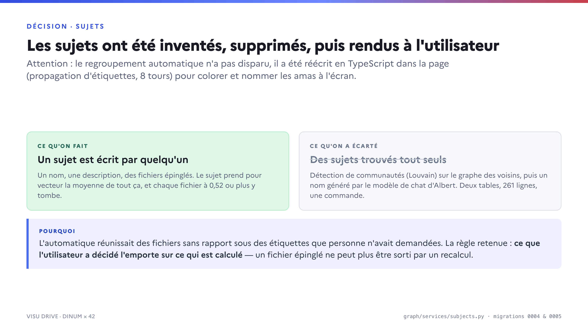
L'automatique réunissait des fichiers sans rapport sous des étiquettes que personne n'avait demandées, et il fallait garder ces noms stables à mesure que les fichiers arrivaient. La règle retenue : ce que l'utilisateur a décidé l'emporte sur ce qui est calculé — un fichier épinglé ne peut plus être sorti par un recalcul.
Les modèles Topic et ItemTopic ont été créés en 0001, détruits
en 0004, puis recréés en 0005 avec une sémantique inverse. Un lecteur des
migrations seules peut légitimement croire que l'automatique existe encore.
Il a été réécrit en TypeScript dans la page. findClusters() est une propagation
d'étiquettes pondérée sur les liens retenus (8 tours), et nameTopics() baptise chaque amas
à partir des mots de ses fichiers — deux mots au maximum, joints par « · ». Ce sont ces amas
qui reçoivent une couleur. Les sujets du serveur et les amas de la page sont deux notions différentes
qui coexistent à l'écran.
Le seuil de 0,52 mérite une note. Il vaut ce qu'il vaut : mesuré sur un seul drive de production, où ce qui appartient à un sujet se tient à 0,56 et au-dessus, ce qui n'y appartient pas à 0,46, et la ligne est tirée entre les deux. Il était à 0,45 le matin même, valeur à laquelle une photo de cerf tombait dans un sujet sur les abeilles.
5. Le code
Les cinq tables
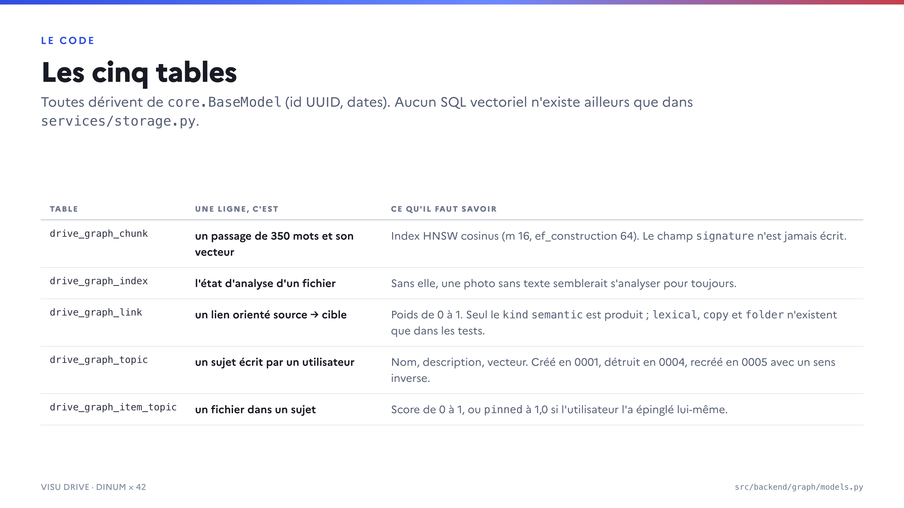
| Table | Une ligne, c'est | Ce qu'il faut savoir |
|---|---|---|
drive_graph_chunk | un passage et son vecteur | Index HNSW cosinus. Le champ signature (MinHash) n'est écrit nulle part : il était réservé à une étape lexicale jamais faite. |
drive_graph_index | l'état d'analyse d'un fichier | Sans elle, une photo sans texte aurait l'air de s'analyser pour toujours. |
drive_graph_link | un lien orienté source → cible | Poids de 0 à 1, unicité sur (source, target, kind). Seul le kind semantic est produit ; lexical, copy et folder n'existent que dans les tests. |
drive_graph_topic | un sujet écrit par un utilisateur | Nom, description, vecteur, créateur. |
drive_graph_item_topic | un fichier dans un sujet | Score de 0 à 1, ou pinned à 1,0 si l'utilisateur l'a épinglé. |
src/backend/graph/models.py
La façade de stockage
Aucun SQL vectoriel n'existe ailleurs que dans graph/services/storage.py. Les autres
étapes passent par sa poignée de fonctions :
from core.models import Item
from graph.services import storage
storage.save_chunks(item, chunks) # remplace les passages d'un item
vector = storage.item_vector(item) # moyenne normalisée des passages, None si aucun
readable = Item.objects.readable_per_se(user) # les droits s'appliquent ici
storage.item_similarities(vector, readable, exclude_item=item)
storage.nearest_chunks(vector, readable, k=10) # au niveau passage, avec le texte (la preuve)
storage.replace_links(item, [{"target": other, "weight": 0.82,
"kind": "semantic", "reason": "…", "evidence": "…"}])
storage.delete_chunks(item)replace_links n'a pas de **kwargs et ne valide rien : une clé inconnue
(par exemple surprising, que l'exemple du README passe encore) est ignorée en silence.
L'API
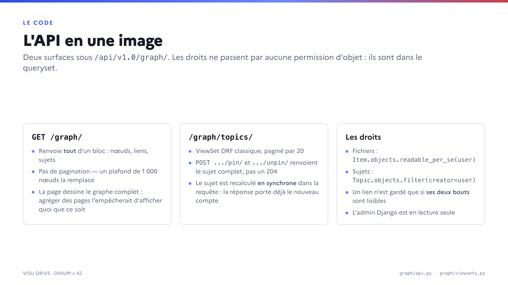
GET /api/v1.0/graph/renvoie tout d'un bloc — nœuds, liens, sujets — sans pagination, avec un plafond de 1 000 nœuds. La page dessine le graphe complet ; agréger des pages l'empêcherait d'afficher quoi que ce soit avant d'avoir tout reçu./api/v1.0/graph/topics/est un ViewSet DRF classique, paginé par 20, avec deux actionspinetunpin. Elles renvoient le sujet complet plutôt qu'un 204 : le nombre de fichiers change à chaque épinglage, autant l'envoyer tout de suite.- Le sujet est recalculé en synchrone dans la requête, pas dans une tâche Celery. En contrepartie, ce chemin appelle Albert sans aucun rejeu : une panne d'Albert fige le vecteur du sujet en silence.
Les droits ne passent par aucune permission d'objet DRF, mais par le queryset :
Item.objects.readable_per_se(user) pour les fichiers,
Topic.objects.filter(creator=user) pour les sujets, et un lien n'est gardé que si
ses deux bouts sont déjà dans l'ensemble lisible. L'admin Django est en lecture seule
sur les trois tables du stockage : les modifier à la main désynchroniserait passages, vecteurs et
liens.
Tous les nombres
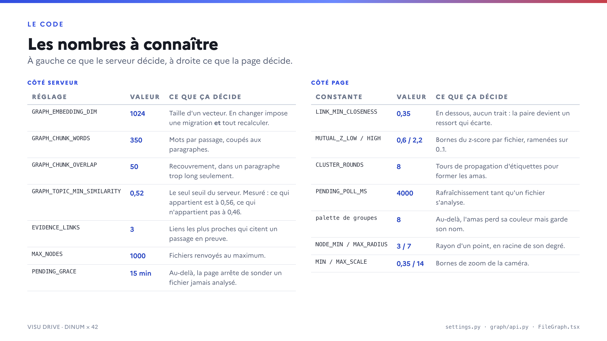
| Réglage | Valeur | Ce que ça décide |
|---|---|---|
GRAPH_EMBEDDING_DIM | 1024 | Taille d'un vecteur, imposée par bge-m3. En changer impose une migration AlterField et le recalcul de tous les vecteurs : à décider avant de remplir la base. |
GRAPH_CHUNK_WORDS | 350 | Mots par passage. |
GRAPH_CHUNK_OVERLAP | 50 | Recouvrement, dans un paragraphe trop long seulement. |
GRAPH_MAX_TEXT_CHARS | 2 000 000 | Texte conservé par fichier (~1 000 passages). Borne les appels facturés à Albert ; au-delà on tronque, on ne refuse pas. |
GRAPH_MAX_FILE_SIZE | 2 Gio | Au-delà, le fichier n'est pas analysé du tout. |
GRAPH_TOPIC_MIN_SIMILARITY | 0,52 | Le seul seuil du serveur. |
GRAPH_VISION_MAX_FILE_SIZE | 6 Mio | Au-delà, l'image n'est pas décrite : elle voyagerait dans la requête. |
GRAPH_TIKA_TIMEOUT | 120 s | Attente d'une réponse de Tika. |
GRAPH_TRANSCRIPTION_SEGMENT_SECONDS | 600 s | Durée d'un segment audio, transcrit sous un délai de 300 s. |
GRAPH_TRANSCRIPTION_WORKERS | 4 | Segments transcrits en parallèle. |
GRAPH_FFMPEG_TIMEOUT | 1 800 s | Attente de ffmpeg et ffprobe. |
EVIDENCE_LINKS | 3 | Liens les plus proches qui citent un passage (tronqué à 300 caractères). |
MAX_NODES | 1 000 | Fichiers renvoyés au maximum. Les liens, eux, ne sont pas plafonnés. |
PENDING_GRACE | 15 min | Au-delà, la page arrête de sonder un fichier jamais analysé. |
max_retries (index_item) | 5 | Rejeux après l'essai initial, sur AlbertError seulement : soit 6 exécutions au maximum. Un fichier corrompu refusé par Tika ne deviendra pas lisible en le rejouant. |
| Constante de la page | Valeur | Ce que ça décide |
|---|---|---|
LINK_MIN_CLOSENESS | 0,35 | En dessous, aucun trait : la paire devient un ressort qui écarte. |
MUTUAL_Z_LOW / HIGH | 0,6 / 2,2 | Bornes du z-score par fichier, ramenées sur 0..1. |
CLUSTER_ROUNDS | 8 | Tours de propagation d'étiquettes. |
PENDING_POLL_MS | 4 000 | Rafraîchissement tant qu'un fichier s'analyse. |
| palette de groupes | 8 | Au-delà, l'amas perd sa couleur mais garde son nom : une teinte partagée serait un mensonge. |
REPULSION / CENTER_PULL | 2 600 / 0,004 | Forces de la simulation, écrite à la main (pas de d3-force). |
MIN / MAX_SCALE | 0,35 / 14 | Bornes de zoom de la caméra. |
6. Infrastructure et déploiement
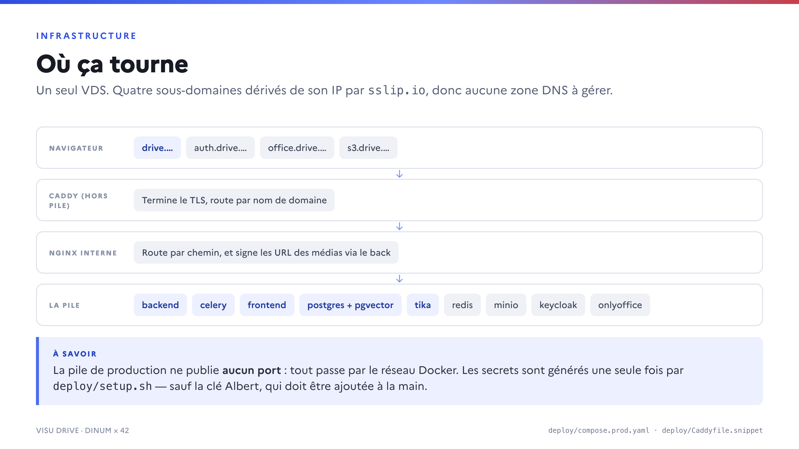
Deux piles distinctes. Celle de développement (compose.yaml, 18 services) publie ses
ports en local. Celle de démonstration et de production (deploy/compose.prod.yaml, projet
drive-prod) n'en publie aucun : tout passe par un nginx interne, puis par un Caddy
extérieur à la pile qui termine le TLS.
Les quatre domaines
Ils sont dérivés de l'IP publique par sslip.io, donc aucune zone DNS à configurer :
drive.<ip-tirets>.sslip.io pour l'application, auth.drive.… pour Keycloak,
office.drive.… pour OnlyOffice, s3.drive.… pour MinIO. Le navigateur dépose les
fichiers directement sur s3.drive.… par URL présignée : un téléversement ne
traverse jamais nginx.
Pourquoi deux proxys
Caddy ne fait que du reverse_proxy par nom de conteneur. nginx reste nécessaire pour le
service des médias, qui exige un auth_request vers le backend afin d'obtenir la signature
S3 — un mécanisme propre à nginx. Deux détails de sa configuration valent d'être connus : les
upstreams sont résolus par variable avec le resolver Docker (un déploiement recrée les conteneurs avec
de nouvelles IP, un upstream statique renverrait des 502), et c'est le répertoire
deploy/nginx qui est monté, pas le fichier (git remplace le fichier à chaque déploiement,
un bind-mount de fichier continuerait de servir l'ancienne copie).
Déployer
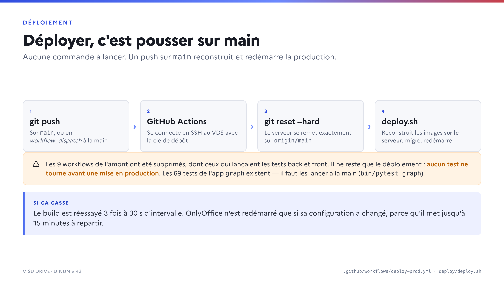
Un push sur main déclenche .github/workflows/deploy-prod.yml, qui se
connecte en SSH au VDS, fait git reset --hard origin/main et lance
deploy/deploy.sh. Les images sont construites sur le serveur, pas dans
GitHub Actions : pas de registre à gérer, mais une logique de reprise (3 tentatives, 30 s) contre
les aléas DNS.
Les neuf workflows de l'amont ont été supprimés, y compris ceux qui lançaient les tests back et
front, « parce qu'ils ont besoin de secrets que nous n'avons pas ». Il ne reste que le déploiement.
Les 69 tests de l'app graph existent et passent : il faut les lancer à la main.
Les secrets
deploy/setup.sh génère une seule fois deploy/.env et
deploy/env/*.env (mots de passe Postgres, Keycloak, MinIO, secret OIDC, clé Django), tous
en chmod 600 et git-ignorés. Ils sont lus par SecretFileValue, qui accepte
aussi bien une variable d'environnement qu'un fichier monté.
ALBERT_API_KEY est le seul secret que setup.sh ne produit pas : il faut
l'ajouter à la main. Sans elle, le client Albert lève une erreur dès son instanciation et toute
l'indexation échoue. Aucune des quelque vingt-deux variables GRAPH_* n'est documentée dans
docs/env.md.
7. Les pièges connus
Relevés en relisant le code. Ce ne sont pas des bugs ouverts, mais des choses qui surprennent.
- Le coût de
relink_allest quadratique. Il est appelé à chaque indexation de fichier et réécrit les liens de tous les fichiers indexés, chacun pointant vers tous les autres. Rien ne le plafonne. - Les appartenances aux sujets traversent les utilisateurs. La tâche passe
Topic.objects.exclude(vector=None)— les sujets de tous les utilisateurs, pas seulement du propriétaire du fichier. L'API cache le résultat, mais les lignes existent en base. - Une panne d'Albert fige un sujet en silence. Le calcul du vecteur d'un sujet
avale l'erreur en avertissement ; sans fichier épinglé, le vecteur devient
Noneet est écrit tel quel. - Le score d'un fichier épinglé peut être écrasé par un recalcul, qui fait un
update_or_createsans exclure les épinglés. - Le vocabulaire diverge entre les couches : le backend parle de
topics(modèle, clé JSON, route), le service s'appellesubjects.py, et le frontend renomme la clé ensubjectsà la frontière. - Du code mort laissé par les annulations :
ItemChunk.signaturen'est jamais écrit, trois des quatrekindde lien ne sont jamais produits,storage.nearest_itemsn'a plus d'appelant en production, etlink_item(item, candidates, **_ignored)avale silencieusement tout argument en trop. - Le CHANGELOG n'a jamais été touché. Aucun des 52 commits de l'équipe n'y figure.
- Les seuils sont calés sur un seul jeu de données — le drive de démonstration, une centaine de fichiers. Ils tiendront peut-être moins bien ailleurs.
8. Vérifier en local
make migrate # applique les 5 migrations (extension pgvector + tables)
bin/pytest graph # 69 tests sur une vraie base pgvector
# le graphe complet, sans rappeler Albert
docker compose exec app-dev python manage.py graph_relink
# amorcer un drive de démonstration depuis le corpus public d'Albert
docker compose exec app-dev python manage.py graph_seed_albertTika n'est pas démarré par défaut en développement : il est derrière le profil compose
graph. En production, il tourne en permanence.
Dans un shell Django :
from core.models import Item
from graph.services import storage
from graph.services.chunking import Chunk, hash_text
item = Item.objects.filter(type="file", upload_state="ready").first()
storage.save_chunks(item, [Chunk(0, "test", hash_text("test"), [1.0] + [0.0] * 1023)])
storage.item_similarities([1.0] + [0.0] * 1023, Item.objects.all())9. Depuis le 17 septembre 2026
Cette page décrit le graphe tel qu'il était le 16 septembre. Ce qui suit a changé le lendemain ; le reste de la page reste vrai.
- La couleur d'un point, ce sont vos droits, plus sa famille de format : fichier à vous, modifiable, en lecture seule, ou atteint par un lien. Sur un drive partagé, c'est la première chose à savoir d'un document qu'on vous montre. Le format reste le carré d'un dossier et un filtre.
- La taille d'un point, c'est le jour de l'ajout du fichier au drive, plus le jour de sa dernière écriture : un fichier renommé ce matin n'est pas un fichier nouveau.
- Quatre filtres se cumulent dans un panneau à eux : date d'ajout, auteur, type, droits. Chaque famille restreint, chaque facette d'une même famille élargit. Les sujets restent dans leur panneau de gauche.
- Les fils portent leur similarité en chiffres autour du fichier ouvert, et un fil survolé nomme les deux fichiers qu'il joint. Avec un sujet en scène, un fil se voit à la mesure de ce que ce sujet tient ses deux extrémités.
- La carte d'un fichier donne ses métadonnées, ce qu'il dit du sujet regardé — trois phrases lues par Albert — et, sous chaque voisin, une phrase sur ce que les deux ont en commun. Lues à l'ouverture de la carte ; gardées une semaine, contre la date du fichier. Albert injoignable : la carte perd ses phrases, jamais son contenu.
- Deux fichiers au même contenu sont nommés comme tels et la carte propose d'en garder un. Sur l'empreinte des passages, nom du fichier retiré — pas sur le poids du lien, qui pour deux copies d'un document de douze passages lit 0,96 et n'atteint jamais 1.
- La banque de démonstration (
graph_seed_albert) écrit trente documents de Légifrance et des fiches travail-emploi en trois formats — texte, tableur, page scannée — répartis sur trois dossiers aux droits différents, plusieurs auteurs et dix-huit mois de dates. Chaque fichier est ensuite lu par le pipeline ordinaire : le scan passe par l'OCR de Tika comme n'importe quel dépôt. Elle se lance depuis l'onglet Actions de GitHub (Seed demo bank), le serveur n'étant accessible qu'à la clé de déploiement. - Une collection Albert se lit page par page. L'API rend une page à la fois quoi
que dise
limit;mediatech-legifrancen'expose en tout que six documents distincts, d'où une banque de six documents Légifrance et vingt-quatre fiches.